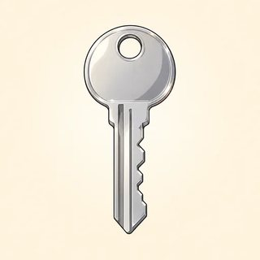
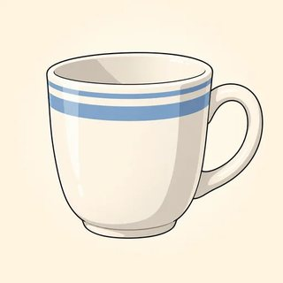
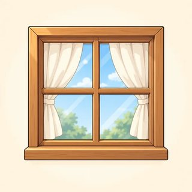
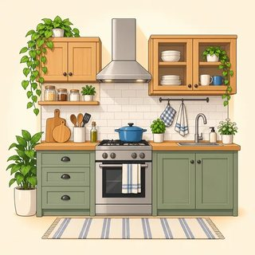

Hello! My name is Amir. I'm from Egypt. I'm thirty-five years old. I live in a small flat with my wife and my two children. There are three rooms: a kitchen, a bedroom, and a living room.
I work in a shop. I get up at six o'clock. I work from Monday to Friday. I don't work on Saturday or Sunday. On Sunday, I cook for my family. I can cook very well!
My daughter's name is Lina. She is eight. Right now, she is reading a book.
English Foundations (A1) · Assessment · Class 13
Progress Test 1 — Modules 1–4
A friendly halfway check after Lesson 4.3. It covers the alphabet and spelling, greetings, numbers, to be, this/that and a/an, family and possessives, the present simple, time, there is/are, can, food, and the present continuous. It tells you what to recycle in Weeks 7–12. It does not rank anyone.
Why a progress test, and how to frame it
Many adult learners last took a test years ago, or never in a classroom. Some associate tests with immigration interviews or job screening. Say it plainly and in simple English: "This is a check. It helps me. It helps you. No problem!" Show the icons on the board first, do each example item together, and let people know they can ask you to repeat an instruction at any time. The listening passages are read twice, slowly.
Running Class 13 (90 min)
| Stage | Time | Interaction | Procedure |
|---|---|---|---|
| Warmer & set-up | 10 min | T–S | A quick greeting chain ("Hello, I'm… Nice to meet you."). Put the six icons on the board and mime each one: 👂 listen, ✏️ write, 📖 read, ⭕ circle, ✔️ tick, 🗣️ say. Hand out the paper face down; learners write their name. |
| Part 1 · Listening | 12 min | T–S | The whole class together. Read each .script on the teacher pages twice, pausing about 10 seconds between readings. Do example item 0 together first. |
| Parts 2–5 · written | 33 min | S | Vocabulary, Grammar, Reading, Writing, done individually. Walk around and read instructions aloud to anyone who asks. Early finishers check their work and then help set up the catch-up stations. They don't help classmates with the test. |
| Break | 5 min | — | Collect papers. |
| Speaking + catch-up stations | 30 min | S–S · T–S | Call learners to a quiet corner in pairs for the 5-minute speaking task (cards on the teacher pages) and score with the grid. Everyone else rotates through catch-up stations: ① flashcard games from Modules 1–4, ② the online lessons on a phone (🔊 Listen, then say it), ③ workbook review pages. About 6 pairs fit in 30 minutes. With more learners, finish the speaking in the Class 14 warmer or ask a volunteer to run the stations. |
You need
- One learner paper per person (the middle section of this pack), printed large and in color if possible (the pictures are the cues)
- The teacher pages: listening scripts, speaking cards (cut A/B), and one scoring grid per pair
- Pencils and erasers, a clock the class can see
- The answer key and rubrics:
assessment/assessment-key.html
What each part checks
- Listening /12: numbers (-teen vs -ty), spelling, key words, a short talk
- Vocabulary /10: objects, food, home (picture + word bank)
- Grammar /15: to be, a/an, these, his/her, do/does, -s, there are, any, at, can, -ing
- Reading /8: a short personal text
- Writing /10: a form + 3 sentences about you
- Speaking /15: meet a partner and ask questions (pairs)
Literacy-adapted version (pre-literate and low-literacy learners)
Use the same paper and change how it is done, not what it tests. Read every instruction and every item aloud, one at a time. Enlarge the paper to A3 or tabloid if you can. In Part 2 learners may point to the picture while you say the word; mark it as correct if they point correctly or copy the word from the bank. In Part 3 read both choices aloud and let them circle what they hear as right. Do Part 4 orally: read the text aloud twice and ask the questions. For Part 5 they may copy their details from an ID card or a card you prepare, and give the three sentences orally while you scribe. Give extra time, or split the paper over two sittings. Write "Adapted" at the top and note what changed. Report these learners' listening and speaking as the main evidence. Low literacy is not low ability. It points to a literacy-support need, and the key says how to act on it.
Personal information is always optional
Items that ask for a phone number, email, age, or family can be answered with a "new identity" (the cards on the teacher pages, or anything the learner invents). Say this before the test starts: "Real or new, no problem." We are testing the English, not the facts.
English Foundations (A1) · Progress Test 1
My English Check ✅
Name:
Date:
Class:
Take your time. It's OK to ask: "Can you repeat, please?" 🙂
👂
Part 1 · Listening
___ / 12👂⭕A. Listen. Circle the number.
01440
11550
21330
36776
4078 442 190087 442 910
👂✏️B. Listen. Write the name.
0A N N A
5
6
👂✔️C. Listen. Tick ✔️ the picture.
7



8

9


👂⭕D. Listen to Rosa. Circle.
10Rosa is from … BrazilMexicoSpain
11Rosa is … years old. 233242
12


12 → Rosa can't … Tick ✔️ one.
✏️
Part 2 · Words
___ / 10📖✏️Look. Write the word. Use the words in the box.
windoweggpenkitchenfishchaircupbreadbedapple
1

2

3

4

5

6

7
8
9

10

⭕
Part 3 · Grammar
___ / 15📖⭕Circle the right word.
0My name amisare Anna.
1I amisare from Brazil.
2They amisare my friends.
3It's aan orange.
4ThisThese are my keys.
5This is my brother. HisHer name is Tom.
6This is Anna. HisHer mother is a doctor.
7I don'tdoesn't work on Sunday.
8She workworks in a shop.
9DoDoes you get up early?
10He don'tdoesn't have breakfast.
11There isare two bedrooms.
12Are there someany chairs?
13I start work atonin eight o'clock.
14She can swimswimsswimming.
15Look! They watchare watching TV now.
📖
Part 4 · Reading
___ / 8📖Read about Amir.
⭕Yes or No? Circle.
1Amir is from Egypt.YesNo
2Amir is 53.YesNo
3There are four rooms in the flat.YesNo
4Amir works on Saturday.YesNo
5Amir can cook.YesNo
6Lina is reading now.YesNo
✏️Write the answer.
7What time does Amir get up?
8How old is Lina?
✏️
Part 5 · Writing
___ / 10✏️A. Write your information. Real or new, no problem. 🙂
| First name | |
|---|---|
| Last name | |
| Country | |
| Phone number | |
✏️B. Write 3 sentences about you.
I am from …I live in …I have …
I get up at …I work in … / I don't work.I can … / I can't …I like …
1
2
3
Finished! Well done. 🎉 Check your answers. ✔️
| For the teacher | 1 Listening | 2 Words | 3 Grammar | 4 Reading | 5 Writing | Written | Speaking |
|---|---|---|---|---|---|---|---|
| Score | /12 | /10 | /15 | /8 | /10 | /55 | /15 |
Part 1 · Listening Scripts
Read each item twice, at a natural but slow pace, and pause about 10 seconds. Say the item number first ("Number one"). Don't mouth the answer or point. Keep your hands still.
A · Circle the number
Example, number zero: fourteen. Fourteen. (Show the circle on 14.)
Number 1: fifteen.
Number 2: thirty.
Number 3: sixty-seven.
Number 4: My phone number is oh-seven-eight, double four-two, one-nine-oh.
Number 1: fifteen.
Number 2: thirty.
Number 3: sixty-seven.
Number 4: My phone number is oh-seven-eight, double four-two, one-nine-oh.
B · Write the name
Example, number zero: My name is Anna. A – double N – A.
Number 5: My name is Karim. K – A – R – I – M.
Number 6: My last name is Jones. J – O – N – E – S.
Number 5: My name is Karim. K – A – R – I – M.
Number 6: My last name is Jones. J – O – N – E – S.
C · Tick the picture
Number 7: It's an umbrella.
Number 8: This is my grandfather.
Number 9: There is a sofa in the living room.
Number 8: This is my grandfather.
Number 9: There is a sofa in the living room.
D · Rosa (read the whole text twice, then give 1 minute to circle)
Hello! My name is Rosa. I'm from Mexico. I'm thirty-two years old. I have two brothers. I work in a hospital. I start work at seven o'clock. I can cook, and I can sing, but I can't swim!
Pair Speaking Task · 5 minutes
Two learners sit with you. Give Card A to one and Card B to the other. Read the cards aloud together first, then check the instructions:
Do you ask questions? (Yes.) Do you answer your partner? (Yes.) Real information or new? (Real or new, no problem.)
Let them talk. Step in only to restart a stuck pair ("Ask about the phone number"). Don't correct during the task. Score each learner on the grid, using the rubric in the key. Mixed-level pairs: score each person on what they did, not on the pair's result.
Card A · Student A
👥 Meet a new classmate
- Say hello. Say your name.
- Ask: What's your name? How do you spell it?
- Ask: Where are you from?
- Ask: What's your phone number? Write it: ______________
- Ask: Can you cook?
- Say goodbye. 👋
Card B · Student B
👥 Meet a new classmate
- Answer. Say your name and spell it.
- Ask: Where are you from?
- Ask: Do you have brothers or sisters?
- Ask: What time do you get up?
- Ask: What are you doing now?
- Say: Nice to meet you! 👋
New identity card 1
🪪 Sam Lee
From: Canada · 28 years old
Phone: 555 0142
Two sisters · gets up at 7:00
Can cook · can't swim
New identity card 2
🪪 Maria Costa
From: Italy · 41 years old
Phone: 555 0187
One son · gets up at 6:30
Can swim · can't cook
Stretch (for a pair who finishes early): "Ask one more question. Your idea!" Support: let a learner point to the card line and read the question, which is fine. Score the answers as normal.
Speaking Scoring Grid
Score each criterion 0–3: 0 = no response · 1 = Not yet A1 · 2 = A1 · 3 = A1+ (strong). The descriptors are in the assessment key. Total /15.
Learner A: ______________________ Learner B: ______________________ Date: __________
| Criterion | What to listen for | A (0–3) | B (0–3) |
|---|---|---|---|
| Task & social language | Greets, introduces self, gives name + spelling and country, says goodbye; please / thank you | ||
| Range (words) | Enough words for names, numbers, family, routine, abilities | ||
| Accuracy (grammar) | I'm / I have / I get up / I can / I'm -ing; question forms from the card | ||
| Interaction | Asks the card questions, answers the partner, repairs: "Sorry? / Slowly, please / Can you repeat?" | ||
| Pronunciation & fluency | Understandable with some effort; numbers clear (-teen / -ty); pauses are fine | ||
| Total /15 · one thing that went well · one next step | |||
After the test: close the loop in Week 7
Score the papers before Class 14 with the key. Add up each section across the class, because the weakest section tells you what to recycle. Warmers in Classes 14–19 are a good place for it (for example, a 5-minute number dictation if many missed Part 1A). Give each learner their paper back with one thing they did well and one thing to practice, plus the online lesson that practices it. The key has a class analysis grid and feedback phrases.
Ray de la Paz© 2026 Ray de la Paz · English Foundations (A1 Beginner)
Assessment · Progress Test 1 · v1.0